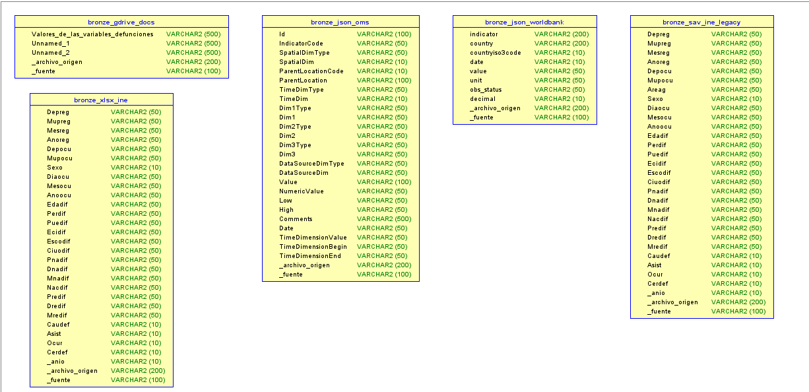
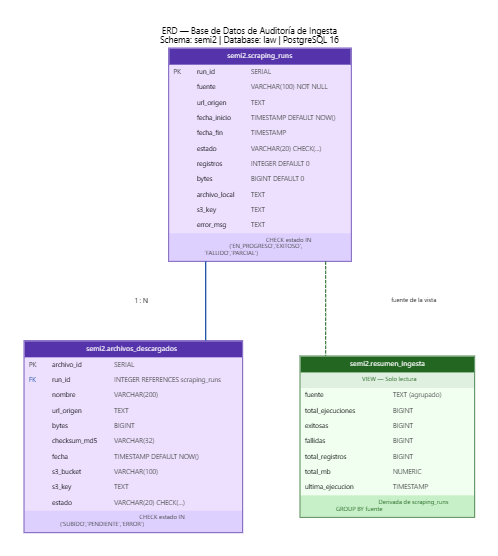

Diccionario de Tablas — Capa Bronze (Sandbox)¶
Las cinco tablas Delta del schema bronze en Databricks Free Edition. Todas las tablas son independientes entre sí por diseño: una tabla por fuente de datos, sin relaciones entre ellas. Cada tabla incluye columnas de metadato de trazabilidad prefijadas con guion bajo.
Leyenda de banderas:
| Bandera | Significado |
|---|---|
[META] |
Metadato de trazabilidad inyectado durante la ingesta, no proviene de la fuente |
[SENSIBLE] |
Contiene o permite inferir información personal |
[CRITICA] |
Esencial para los análisis principales pre/post COVID |
NULL |
El campo puede estar vacío (diseño sin transformación destructiva) |
bronze.xlsx_ine¶
674,064 registros · Fuente: INE Guatemala 2018–2024 · Formato original: XLSX
Microdatos de defunciones del Instituto Nacional de Estadística para el periodo post-2017. Cada fila representa un fallecimiento individual con sus atributos demográficos, geográficos y la causa de muerte codificada en CIE-10. Todos los campos se ingieren como string sin transformación.
| Columna | Tipo | Descripción | Dominio | Banderas |
|---|---|---|---|---|
Depreg |
string | Departamento de registro legal | Código numérico 1–22 | NULL |
Mupreg |
string | Municipio de registro legal | Código INE | NULL |
Mesreg |
string | Mes del registro legal | 1–12 | NULL |
Añoreg |
string | Año del registro legal | 2018–2024 | NULL |
Depocu |
string | Departamento donde ocurrió la muerte | Código numérico 1–22 | [CRITICA] NULL |
Mupocu |
string | Municipio donde ocurrió la muerte | Código INE | [CRITICA] [SENSIBLE] NULL |
Sexo |
string | Sexo biológico registrado | 1=Hombre, 2=Mujer, 9=Ignorado | [CRITICA] NULL |
Diaocu |
string | Día del fallecimiento | 1–31 | [SENSIBLE] NULL |
Mesocu |
string | Mes del fallecimiento | 1–12 | NULL |
Añoocu |
string | Año del fallecimiento | 2018–2024 | [CRITICA] NULL |
Edadif |
string | Edad en años al momento del fallecimiento | 0–120 | [CRITICA] [SENSIBLE] NULL |
Perdif |
string | Pertenencia étnica | 1=Maya, 2=Garífuna, 3=Xinca, 4=Mestizo, 5=Otro | [SENSIBLE] NULL |
Puedif |
string | Pueblo de pertenencia específico | Catálogo INE ~30 pueblos | [SENSIBLE] NULL |
Ecidif |
string | Estado civil al momento de la defunción | 1=Soltero, 2=Casado, 3=Unido, 4=Viudo, 5=Divorciado | NULL |
Escodif |
string | Último nivel educativo alcanzado | 0=Ninguno … 5=Superior, 9=Ignorado | NULL |
Ciuodif |
string | Código de ocupación | Clasificación CIUO del INE | [SENSIBLE] NULL |
Pnadif |
string | País de nacimiento | Códigos INE | NULL |
Dnadif |
string | Departamento de nacimiento | 1–22 | NULL |
Mnadif |
string | Municipio de nacimiento | Código INE | [SENSIBLE] NULL |
Nacdif |
string | Nacionalidad legal registrada | Códigos INE | NULL |
Predif |
string | País de residencia habitual | Códigos país | NULL |
Dredif |
string | Departamento de residencia habitual | 1–22 | [SENSIBLE] NULL |
Mredif |
string | Municipio de residencia habitual | Código INE | [SENSIBLE] NULL |
Caudef |
string | Causa de muerte en CIE-10 | A00–Z99 | [CRITICA] NULL |
Asist |
string | Tipo de asistencia médica recibida | 1=Con asistencia, 2=Sin, 3=En tránsito, 9=Ignorado | NULL |
Ocur |
string | Tipo de lugar donde ocurrió la muerte | 1=Hospital público, 2=IGSS, 3=Clínica privada, 4=Domicilio, 5=Vía pública | NULL |
Cerdef |
string | Quién certificó la defunción | 1=Médico tratante, 2=Forense, 3=Autoridad local | NULL |
_anio |
string | Año del archivo de origen | 2018–2024 | [META] |
_archivo_origen |
string | Ruta S3 del archivo que originó esta fila | raw/ine/defunciones_YYYY.xlsx | [META] |
_fuente |
string | Identificador de la fuente de datos | INE_GUATEMALA | [META] |
bronze.sav_ine_legacy¶
245,167 registros · Fuente: INE Guatemala 2015–2017 · Formato original: SAV (SPSS), convertido a Parquet
Microdatos de defunciones para el periodo pre-2018. Estructura idéntica a bronze.xlsx_ine con la adición de la columna Areag presente únicamente en los archivos legacy. Los archivos originales .sav se preservan en S3 junto al parquet convertido.
| Columna | Tipo | Descripción | Dominio | Banderas |
|---|---|---|---|---|
Depreg |
string | Departamento de registro legal | Código numérico 1–22 | NULL |
Mupreg |
string | Municipio de registro legal | Código INE | NULL |
Mesreg |
string | Mes del registro legal | 1–12 | NULL |
Añoreg |
string | Año del registro legal | 2015–2017 | NULL |
Depocu |
string | Departamento donde ocurrió la muerte | Código numérico 1–22 | [CRITICA] NULL |
Mupocu |
string | Municipio donde ocurrió la muerte | Código INE | [CRITICA] [SENSIBLE] NULL |
Areag |
string | Clasificación urbana/rural del lugar de ocurrencia | 1=Urbano, 2=Rural | NULL |
Sexo |
string | Sexo biológico registrado | 1=Hombre, 2=Mujer, 9=Ignorado | [CRITICA] NULL |
Diaocu |
string | Día del fallecimiento | 1–31 | [SENSIBLE] NULL |
Mesocu |
string | Mes del fallecimiento | 1–12 | NULL |
Añoocu |
string | Año del fallecimiento | 2015–2017 | [CRITICA] NULL |
Edadif |
string | Edad en años al momento del fallecimiento | 0–120 | [CRITICA] [SENSIBLE] NULL |
Perdif |
string | Pertenencia étnica | 1=Maya, 2=Garífuna, 3=Xinca, 4=Mestizo, 5=Otro | [SENSIBLE] NULL |
Puedif |
string | Pueblo de pertenencia específico | Catálogo INE ~30 pueblos | [SENSIBLE] NULL |
Ecidif |
string | Estado civil | 1=Soltero, 2=Casado, 3=Unido, 4=Viudo, 5=Divorciado | NULL |
Escodif |
string | Último nivel educativo alcanzado | 0=Ninguno … 5=Superior, 9=Ignorado | NULL |
Ciuodif |
string | Código de ocupación | Clasificación CIUO del INE | [SENSIBLE] NULL |
Pnadif |
string | País de nacimiento | Códigos INE | NULL |
Dnadif |
string | Departamento de nacimiento | 1–22 | NULL |
Mnadif |
string | Municipio de nacimiento | Código INE | [SENSIBLE] NULL |
Nacdif |
string | Nacionalidad legal registrada | Códigos INE | NULL |
Predif |
string | País de residencia habitual | Códigos país | NULL |
Dredif |
string | Departamento de residencia habitual | 1–22 | [SENSIBLE] NULL |
Mredif |
string | Municipio de residencia habitual | Código INE | [SENSIBLE] NULL |
Caudef |
string | Causa de muerte en CIE-10 | A00–Z99 | [CRITICA] NULL |
Asist |
string | Tipo de asistencia médica recibida | 1=Con asistencia, 2=Sin, 3=En tránsito, 9=Ignorado | NULL |
Ocur |
string | Tipo de lugar donde ocurrió la muerte | 1=Hospital público, 2=IGSS, 3=Clínica privada, 4=Domicilio, 5=Vía pública | NULL |
Cerdef |
string | Quién certificó la defunción | 1=Médico tratante, 2=Forense, 3=Autoridad local | NULL |
_anio |
string | Año del archivo de origen | 2015–2017 | [META] |
_archivo_origen |
string | Ruta S3 del archivo que originó esta fila | raw/ine/defunciones_YYYY.parquet | [META] |
_fuente |
string | Identificador de la fuente de datos | INE_GUATEMALA_LEGACY | [META] |
bronze.json_oms¶
1,708 registros · Fuente: WHO/OMS Global Health Observatory API · Granularidad: País × Indicador × Año × Sexo
Indicadores oficiales de salud agregados a nivel país descargados desde la API pública GHO. No contiene datos individuales. Cubre Guatemala, Costa Rica, Honduras, El Salvador y Panamá.
| Columna | Tipo | Descripción | Dominio | Banderas |
|---|---|---|---|---|
Id |
string | ID interno del registro en la base de datos GHO | Entero como string | NULL |
IndicatorCode |
string | Código GHO del indicador | WHOSIS_000001, WHOSIS_000002, MDG_0000000001 | [CRITICA] |
SpatialDimType |
string | Tipo de dimensión espacial | COUNTRY | NULL |
SpatialDim |
string | Código ISO-3 del país | GTM, CRI, HND, SLV, PAN | [CRITICA] |
ParentLocationCode |
string | Código de región OMS | AMR | NULL |
ParentLocation |
string | Nombre de la región OMS | Americas | NULL |
TimeDimType |
string | Tipo de dimensión temporal | YEAR | NULL |
TimeDim |
string | Año de medición | 1990–2023 aprox. | [CRITICA] |
Dim1Type |
string | Tipo de primera dimensión adicional | SEX | NULL |
Dim1 |
string | Valor de la primera dimensión | Male, Female, Both sexes | NULL |
Dim2Type |
string | Tipo de segunda dimensión | Vacío en estos indicadores | NULL |
Dim2 |
string | Valor de la segunda dimensión | NULL | NULL |
Dim3Type |
string | Tipo de tercera dimensión | NULL | NULL |
Dim3 |
string | Valor de la tercera dimensión | NULL | NULL |
DataSourceDimType |
string | Tipo de fuente de datos | NULL | NULL |
DataSourceDim |
string | Fuente de datos específica | NULL | NULL |
Value |
string | Valor del indicador como texto | Cadena | NULL |
NumericValue |
string | Valor numérico del indicador | Real positivo | [CRITICA] NULL |
Low |
string | Límite inferior del intervalo de confianza | Real positivo | NULL |
High |
string | Límite superior del intervalo de confianza | Real positivo | NULL |
Comments |
string | Notas metodológicas de la OMS | Texto libre | NULL |
Date |
string | Fecha de publicación del dato | ISO 8601 | NULL |
TimeDimensionValue |
string | Valor canónico de la dimensión temporal | Año como string | NULL |
TimeDimensionBegin |
string | Inicio del periodo de medición | ISO 8601 | NULL |
TimeDimensionEnd |
string | Fin del periodo de medición | ISO 8601 | NULL |
_archivo_origen |
string | Ruta S3 del JSON que originó esta fila | raw/oms/who_{indicador}_{pais}.json | [META] |
_fuente |
string | Identificador de la fuente | WHO_OMS | [META] |
bronze.json_worldbank¶
450 registros · Fuente: World Bank API · Granularidad: País × Indicador × Año
Cinco indicadores de mortalidad y causa de muerte para seis países centroamericanos (GTM, CRI, HND, SLV, PAN, NIC) con rango temporal 2010–2024. Esta fuente reemplazó a CEPAL CEPALSTAT cuyo dominio no fue resolvible durante la ingesta, fallo documentado en la tabla de auditoría (run_id 22).
| Columna | Tipo | Descripción | Dominio | Banderas |
|---|---|---|---|---|
indicator |
string | Objeto JSON con id y valor del indicador | Serializado como string | [CRITICA] |
country |
string | Objeto JSON con id y nombre del país | Serializado como string | [CRITICA] |
countryiso3code |
string | Código ISO-3 del país | GTM, CRI, HND, SLV, PAN, NIC | [CRITICA] |
date |
string | Año de la medición | 2010–2024 | [CRITICA] |
value |
string | Valor numérico del indicador | Real, puede ser NULL | [CRITICA] NULL |
unit |
string | Unidad de medida | Vacío en estos indicadores | NULL |
obs_status |
string | Estado de la observación | Vacío=real, E=estimado, P=preliminar | NULL |
decimal |
string | Decimales de precisión del valor | Entero como string | NULL |
_archivo_origen |
string | Ruta S3 del JSON que originó esta fila | raw/centroamerica/worldbank_{indicador}.json | [META] |
_fuente |
string | Identificador de la fuente | WORLDBANK | [META] |
bronze.gdrive_docs¶
1,837 registros · Fuente: Google Drive del equipo · Formato original: XLSX
Diccionario de variables del INE descargado desde una carpeta compartida de Google Drive. Contiene los códigos y etiquetas necesarios para decodificar los valores numéricos de las tablas bronze.xlsx_ine y bronze.sav_ine_legacy. Las columnas tienen nombres generados automáticamente al limpiar caracteres especiales del Excel original.
| Columna | Tipo | Descripción | Dominio | Banderas |
|---|---|---|---|---|
Valores_de_las_variables_defunciones |
string | Nombre de la variable o categoría del diccionario | Texto libre | [CRITICA] NULL |
Unnamed:_1 |
string | Segunda columna del Excel original sin encabezado | Texto libre | NULL |
Unnamed:_2 |
string | Tercera columna del Excel original sin encabezado | Texto libre | NULL |
_archivo_origen |
string | Ruta S3 del Excel que originó esta fila | raw/gdrive/diccionario_defunciones_ine.xlsx | [META] |
_fuente |
string | Identificador de la fuente | GOOGLE_DRIVE | [META] |
ERD — Tablas Bronze (Fase 1)¶
Las cinco tablas del schema bronze en Databricks no tienen relaciones entre ellas por diseño. El ERD muestra su estructura física tal como fue importada desde el DDL generado a partir de los schemas reales de Databricks.

ERD — Base de Datos de Auditoría¶
El schema semi2 en PostgreSQL 16 (Docker, localhost:5432, base law) registra cada operación de ingesta. La tabla scraping_runs registra cada ejecución con run_id, fuente, URL de origen, estado, bytes y checksum. La tabla archivos_descargados registra cada archivo individual con su checksum MD5 y ruta S3. La vista resumen_ingesta agrega por fuente para monitoreo rápido.
